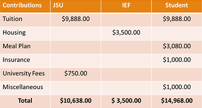

|
Director’s Message
John F. Kennedy once stated, “Change is the law of life. And those who look only to the past or present are certain to miss the future.” It is with this sentiment in mind that I take this opportunity to inform you of the recent and future-focused changes in the International House Program.
First, the funding model for International House scholarships has changed because of broadening financial needs and demands at JSU. After extensively reviewing and discussing numerous options, the optimal decision has been made to steer the International House Program toward a more financially sustainable model while still maintaining the original mission and integrity of our 70-year-old tradition. Under this new financial model, the University, the International Endowment Foundation, and the student will all share the cost of attending JSU as a House resident. The breakdown of cost sharing per academic year is shown in the table below.

Previously, House students were fully funded by JSU and the International Endowment Foundation. Unfortunately, it is no longer possible for JSU or the Foundation to sustain that level of financial commitment. While the new model passes a significant portion of the costs on to the student, it still provides one of the most competitive and financially incentivized attendance packages in Alabama. Additionally, we are hopeful that, through its renewed focus on fundraising, the International Endowment Foundation will soon be able to provide even greater support to our House students by further offsetting their financial responsibility through increased scholarships. Ways in which you can financially support the Foundation and our future students are included in this newsletter.
When it comes to selecting future House students, just as before, efforts will be made to create a rich and diverse population of residents by continuing to select students from the broadest range of countries possible. What is changing, however, is that, as alumni, the students you recommend will now carry a higher weight in our selection process. In other words, we trust and value your recommendations and want to make sure that the prospective students you recommend have the best possible chance of living in the House.
Other changes come in the form of many new programs and activities. Of course, we will continue to provide our students with numerous avenues to engage cultural exchange and educational activities in the community. However, we are now expanding those opportunities. While, traditional activities such as the U.N. Day Tea and the Taster’s Fair will still form the core of our program offerings, we are adding several exciting new ones such as the Global Ambassador Program, International Friends Program, and the International Alumni Mentoring Program. While detailed information on all of our programs is forthcoming, it is important to point out here that the International Friends and the International Alumni Mentoring Programs were created specifically to allow you, our alumni, to participate and engage with our students in a greater capacity. Please stay tuned for more information on how you can become involved.
Clearly, change provides both challenges and opportunities. However, as the director of the International House & Programs, I am certain that, with your increased engagement and financial support along with the continued support of the International Endowment Foundation Board and the University, our historic program will continue to thrive and grow. Through improved recruiting efforts, expanding programs and activities, and providing a greater focus on fundraising, the House will continue to serve as the heart of JSU’s internationalization efforts for the next 70 years. Our guiding motto, “Know one another and you will love one another,” was true at the beginning of the program when there were only six French students, remains true today, and will continue to be true well into the future.
As alumni, you know far better than anyone the benefits of this program. You have experienced them first-hand and have seen the powerful affect they have on the lives of our students and on our campus. Thanks to you and your many personal stories, I have come to love the International House program. I believe in its purpose and am deeply committed to its future. With your help and support, I look forward to continuing the simple but profound legacy of the International House for many more years.
As always, in my capacity as program director, I am at your service. Please feel free to contact me anytime.
Sincerely,

Chandni Khadka
Director, International House & Programs
(256) 782 8304
ckhadka@jsu.edu
|
|